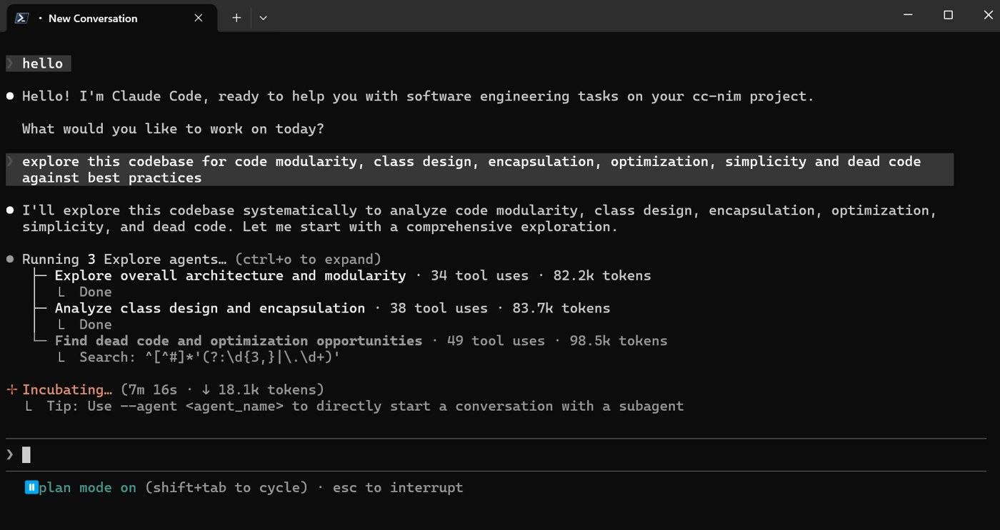

Free Claude Code｜把 Claude Code / Codex / Pi 接到第三方或本地模型的代理工具查核
來源是 GitHub 專案 `Alishahryar1/free-claude-code`。它不是 Anthropic 官方的「免費 Claude Code 帳號」，而是一個本機代理層：讓 Claude Code、Codex CLI、Pi 或 IDE extension 連到使用者自己配置的第三方、免費額度、付費或本地模型 provider。

一句話摘要
值得保存，但要把「free」理解為「可接免費額度或本地模型」，不是繞過 Claude Code / Anthropic 授權；實務上它是 Anthropic Messages / OpenAI Responses 風格的本機 gateway，核心價值在 provider 選擇、模型路由、Admin UI、Claude Code / Codex / Pi launcher 與 Telegram / Discord 遠端操作整合。
GitHub 公開資訊
- Repo：`Alishahryar1/free-claude-code`
- 描述：`Use Claude Code, Codex, Pi, or their IDE extensions through your own provider-backed proxy.`
- 語言：Python。
- 授權：MIT License。
- 需求：`requires-python >=3.14.0`，使用 `uv` / FastAPI / httpx / OpenAI SDK 等。
- 擷取時 GitHub 指標：約 41.7k stars、6.7k forks、333 open issues。
- latest release API 回傳 404：代表未透過 GitHub Releases 發布正式 release；版本號在 `pyproject.toml` 顯示為 `4.12.0`。
- 最近 CI 可見成功紀錄：`CI ali/align-provider-admission-defaults` 成功；也有其他 branch workflow 曾顯示 `action_required`，不等於 main 不能用，但代表仍需看分支狀態。
它實際做什麼
README 主張 FCC 可：
- 啟動 `fcc-server`，在本機提供 Admin UI，預設 log 顯示 `http://127.0.0.1:8082/admin`。
- 透過 `fcc-claude` 啟動 Claude Code。
- 透過 `fcc-codex` 啟動 Codex CLI。
- 透過 `fcc-pi` 啟動 Pi。
- 在 Admin UI 選擇與驗證 provider / model。
- 支援雲端與本地 provider，包括 NVIDIA NIM、OpenRouter、Mistral、DeepSeek、Kimi、Vercel AI Gateway、Bedrock、Hugging Face、Cohere、GitHub Models、Gemini、Groq、SambaNova、Cerebras、Fireworks、Cloudflare、LM Studio、llama.cpp、Ollama 等。
- 讓 Claude Code / Codex 使用原生 model picker 或產生模型 catalog。
- 可選 Telegram / Discord 遠端操作與語音轉文字。
- 可用 optional token authentication 保護本機 proxy。
官方查核：Claude Code 確實支援自訂端點
Anthropic Claude Code 官方文件的 Authentication 頁面明確寫到：若要把請求導向自訂 API endpoint，可設定 `ANTHROPIC_BASE_URL`。官方同頁也列出支援的認證型態包含 Claude.ai credentials、Claude API credentials、Microsoft Foundry、Bedrock、Vertex 與 Claude apps gateway session tokens。
Claude Code setup 文件也確認官方安裝方式包含 `npm install -g @anthropic-ai/claude-code`，而 Help Center 另外提醒：如果系統設定了 `ANTHROPIC_API_KEY`，Claude Code 會優先使用 API key，而不是 Pro / Max / Team / Enterprise 訂閱額度，可能產生 API usage charges。
所以 FCC 的方向「讓 Claude Code 指向本機 gateway」在機制上成立；但它是否完整相容所有 Claude Code 功能，取決於代理層對 Anthropic Messages、tool use、streaming、reasoning、image input、token count 等 API 形狀的實作完整度。
重要邊界與風險
1. 不是官方 Anthropic 專案
這是第三方 repo。官方 Claude Code package 仍是 `@anthropic-ai/claude-code`；FCC 透過環境變數與 launcher 改變其連線目標。若公司環境有合規要求，需先確認是否允許把 Claude Code request 經由第三方 proxy 轉送到其他 provider。
2. 「free」不是無成本
README 寫的是 `free, paid, or local models`。若選 NVIDIA NIM、OpenRouter、Gemini、Groq、GitHub Models 等 provider，實際仍受各 provider 的 API key、免費額度、rate limit、模型授權與計費規則約束。若選本地 Ollama / LM Studio / llama.cpp，成本轉為本機硬體與模型部署成本。
3. 安裝指令有典型 curl pipe shell 風險
README 建議：
```bash
curl -fsSL "https://raw.githubusercontent.com/Alishahryar1/free-claude-code/main/scripts/install.sh" | sh
```
檢查 `install.sh` 可見它會下載 repo archive，並在缺少工具時呼叫 Claude、Codex、Pi、uv 的官方安裝腳本 URL。這類 one-liner 很方便，但在安全實務上應先下載審閱、固定 commit SHA，或至少用 `--dry-run` 查看會執行哪些步驟。
4. API key 集中管理需小心
`.env.example` 涵蓋大量 provider key：NVIDIA NIM、OpenRouter、Mistral、DeepSeek、Kimi、Vercel、Bedrock、Hugging Face、Cohere、GitHub Models、Gemini、Groq 等。這提高切換便利性，也讓本機設定檔成為敏感資產。建議：
- 不要把 `.env` commit 到 repo。
- proxy 只綁 `127.0.0.1`，不要暴露到公網。
- 啟用並更換預設 auth token。
- 對高額 provider 設定 spending limit / rate limit。
5. Claude Code 資料流與遙測仍要分清楚
Anthropic data usage 文件列出可用 `DISABLE_TELEMETRY`、`CLAUDE_CODE_DISABLE_NONESSENTIAL_TRAFFIC` 等環境變數控制非必要流量。FCC README 的 VS Code 設定範例也加入 `DISABLE_AUTOUPDATER`、`DISABLE_FEEDBACK_COMMAND`、`DISABLE_ERROR_REPORTING`、`DISABLE_TELEMETRY` 等變數。這有助於降低非必要流量，但不等於所有 downstream provider 都有相同資料保護政策；真正送出的 prompt / code 仍會到你選的 provider。
初步判斷
這個專案對「想用 Claude Code 工作流，但希望改接 OpenRouter / Gemini / NVIDIA NIM / 本地 Ollama / LM Studio 等模型」的人很有價值。它把 Claude Code 的 terminal / IDE 操作體驗，和多 provider routing 做成一個相對完整的本機代理產品。
但我不會把它歸類為「免費取得 Claude Code 官方高階額度」或「無風險替代官方方案」。更精準的定位是：
- 本機 AI coding agent gateway。
- Claude Code / Codex / Pi launcher wrapper。
- 多 provider 管理 UI。
- 需要使用者自行承擔 provider 成本、資料治理與安裝信任風險的開源工具。
建議使用方式
若要測試，建議順序：
- 先讀 `scripts/install.sh` / `install.ps1`，不要直接 pipe shell。
- 以 throwaway 專案與低權限 API key 測試。
- 只綁 localhost，不做 reverse proxy。
- 先用免費或本地 provider 驗證 Claude Code tool use / streaming 是否符合需求。
- 若要接工作程式碼，先確認 provider 的資料保留、訓練、區域與合規條款。
保存原因
AI coding agent 的趨勢不是只換模型，而是把 IDE / CLI agent 的使用體驗與可替換 provider 分離。FCC 是這個方向很具代表性的開源實作：它把 Claude Code / Codex / Pi 當成前端，把模型與計費後端抽象成可配置 gateway。後續如果 Claude Code 生態往 gateway、enterprise routing、local model fallback 發展，這類工具很可能成為重要參考。